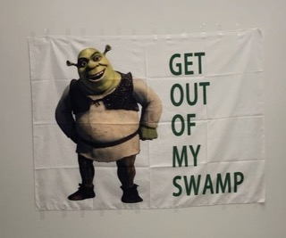

My favorite movie is Shrek, directed by Vicky Jenson and Andrew Adamson. Shrek is an animated comedy film. It features Shrek, an ogre who lives in a swamp, as well as his fairytale creature friends. One of his best friends is Donkey, who goes on many adventures with him.
Although Shrek is a comedy film, it also incldues an extremely valuable lesson. The main lesson I learned from watching Shrek is that you should never judge anyone by what you first see. You must accept others for who they are and not judge a book by its cover. I adore this movie as it is hilarious while also being emotional at times.
